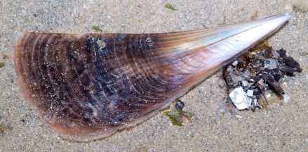
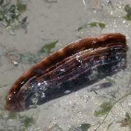
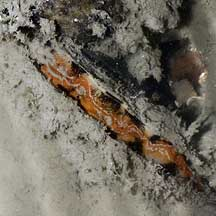
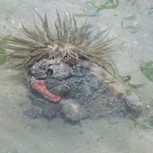
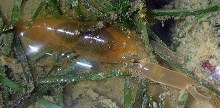
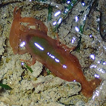
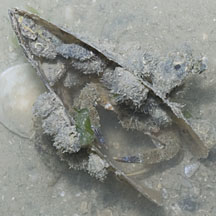
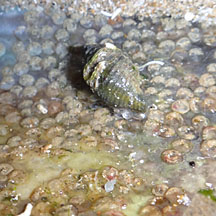
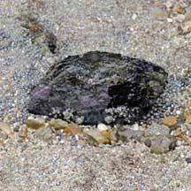

|
|
| bivalves text index | photo index |
| Phylum Mollusca > Class Bivalvia |
| Fan
clams Family Pinnidae updated May 2020
Where seen? These thin, fan-shaped clams are commonly seen on some of our shores, usually near good seagrass meadows. However, they are often overlooked as most of the shell is often buried with only about 2-3cm of the shell sticking out of the ground. Their razor-sharp edges can give a nasty cut to barefoot visitors. So please always wear appropriate footwear when visiting the shores. Features: 10-30cm long. The fan-shaped two-part shell is thin but strong. The animal buries itself, pointed end down. Glands on the foot secret byssus threads near this buried end. These threads attach to buried rocks and stones to anchor the animal in the ground. The broader, razor sharp edge of the shell sticks out above the surface. Careless visitors who walk barefoot on the shores can get a very serious cut if they step on this sharp edge. If the edge is damaged, the animal merely repairs it so it remains razor sharp. The animal's major organs are small and located at the pointed end that is buried deep in the ground where it is difficult for most predators to reach. Fan clams are usually found well spaced apart from one another. Species are difficult to positively identify without close examination. On this website, they are grouped together for convenience of display. What do they eat? Like other bivalves, fan clams are filter feeders. At high tide, they open their shells a little. They then generate a current of water through the shell and sieve out the food particles with enlarged gills. When the tide goes out, they clamp up their shells tightly to prevent water loss. |
 Byssus threads on the narrow end of the shell anchor the animal in the ground. Changi, May 05 |
 The razor-sharp edge can cut barefoot visitors. Chek Jawa, Oct 01 |
| Role in the ecosystem: All manner of seaweeds and encrusting animals often settle on the portions of the fan clam that sticks out above the sand, even when the clam is still alive. These provide food and shelter for small animals. The tiny Pea crab (Pinnotheres sp.) and small snapping shrimps are sometimes found living inside these clams. The crab not only gains shelter but also eats some of the food gathered by the fan shell host. The space between the valves of a dead fan clam is a safe space for animals to shelter or lay their eggs. |
|
 When submerged, the valves of a living clam open slightly and the animal filter feeds Beting Bronok, Jun 06 |
 All kinds of animals stuck on a Fan shell. Changi, May 12 |
 Keelworms on the portion of the shell above the ground. Pulau Sekudu, Jun 06 |
 Snapping shrimp found inside a living Fan shell. Changi, Jul 20 Photo shared by Toh Chay Hoon on facebook. |
 Snapping shrimp found inside a living Fan shell. Changi, Jul 20 Photo shared by Toh Chay Hoon on facebook. |
|
 Crab and Drills hiding in a dead Fan shell. Changi, May 12 |
 Eggs laid on the inside of a dead Fan shell. Changi, May 12 |
| Human
uses: Fan clams are edible and were once plentiful in Singapore
and collected as food. Like other filter-feeding clams, however, fan
clams may be affected by red
tide and other harmful algal blooms. Such clams can then be harmful
to eat. It is said that in the past, people collected the long, golden byssus threads of the Noble pen shell (Pinna nobilis), a fan clam found in the Mediterranean. The threads were woven into a delicate and fine 'cloth of gold'. Some suggest that the 'Golden Fleece' of Greek mythology was made out of the byssus threads of this clam. Some other species of fan clams have byssus hairs that are so similar to human hair that people refuse to eat the animals. Status and threats: Some of our fan clams are listed as 'Vulnerable' on the Red List of threatened animals of Singapore. |
| Fan clams on Singapore shores |
On wildsingapore
flickr
|
| Other sightings on Singapore shores |
 Pulau Salu, Jun 10 |
Sudden explosion of Fan clams at Changi, Feb 2019 from the wild shores of singapore blog.
|
| Family
Pinnidae recorded for Singapore from Tan Siong Kiat and Henrietta P. M. Woo, 2010 Preliminary Checklist of The Molluscs of Singapore. in red are those listed among the threatened animals of Singapore from Davison, G.W. H. and P. K. L. Ng and Ho Hua Chew, 2008. The Singapore Red Data Book: Threatened plants and animals of Singapore.
|
Links
|